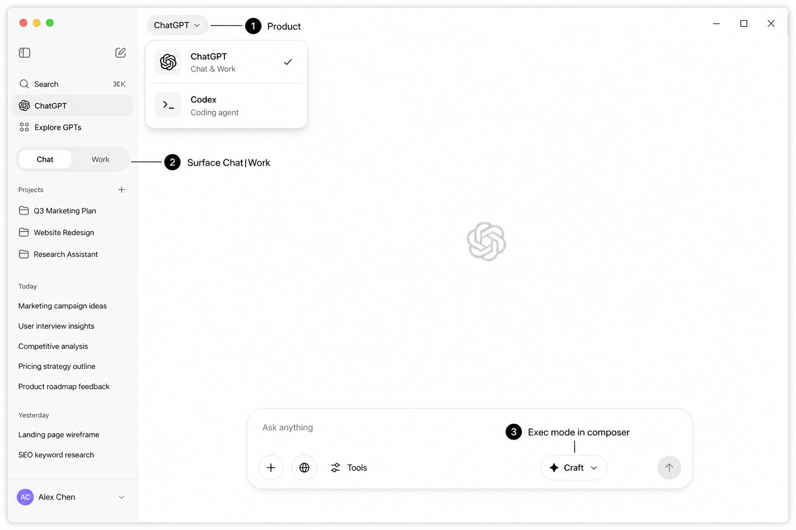
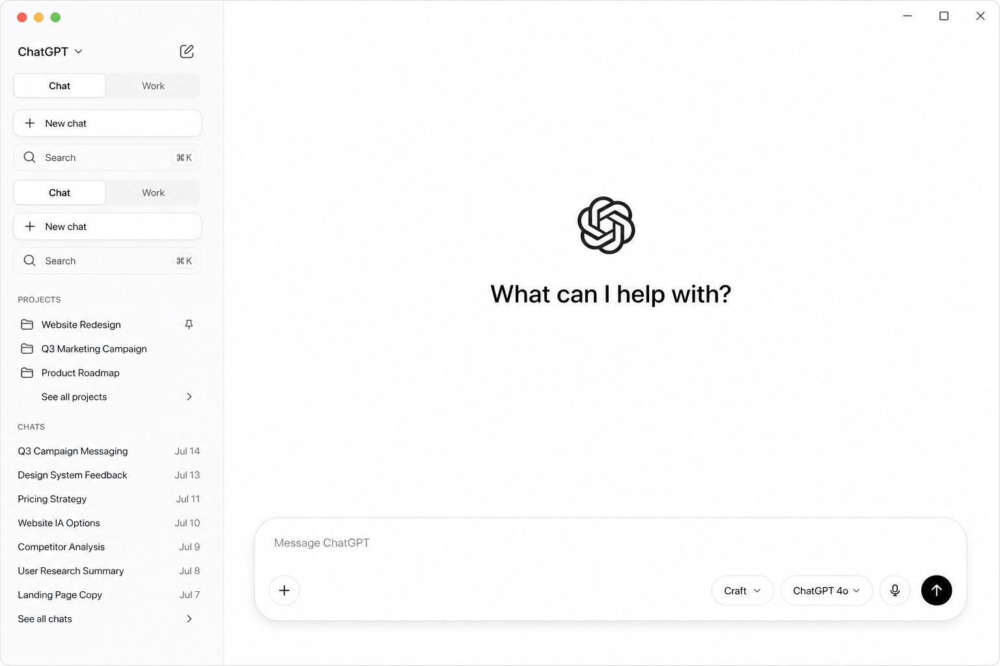
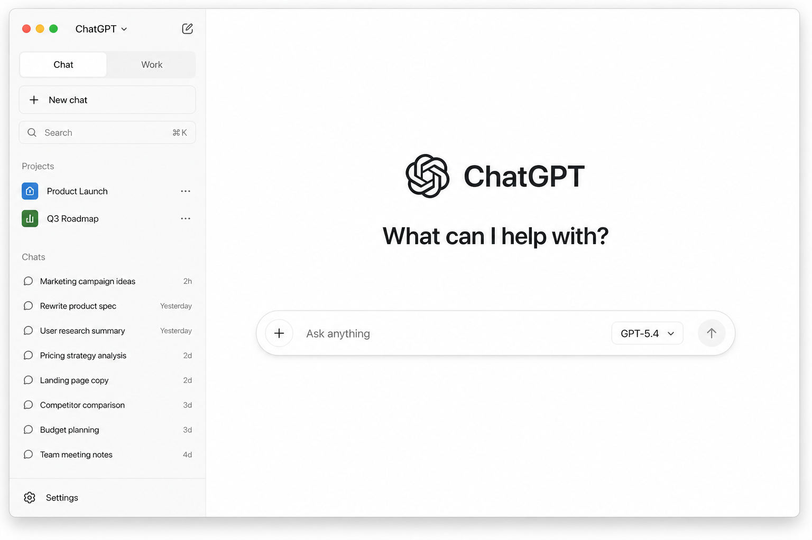
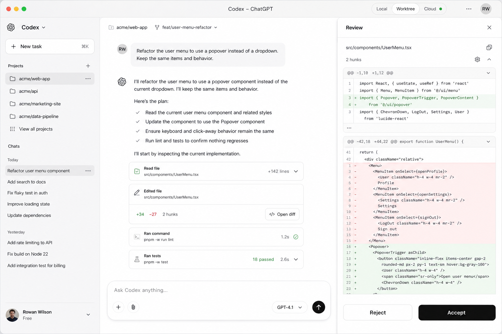
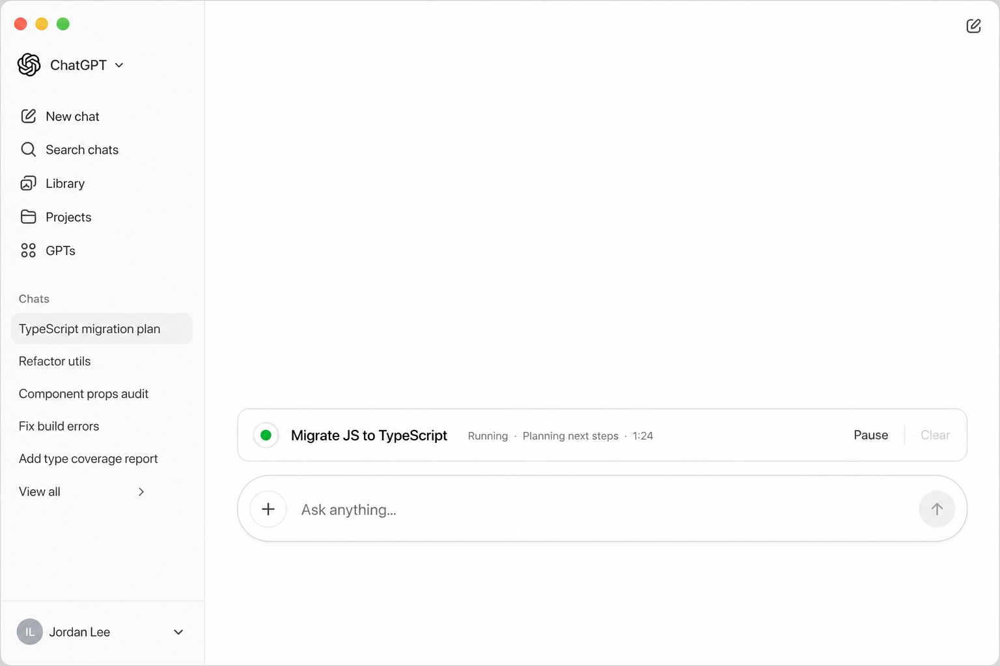
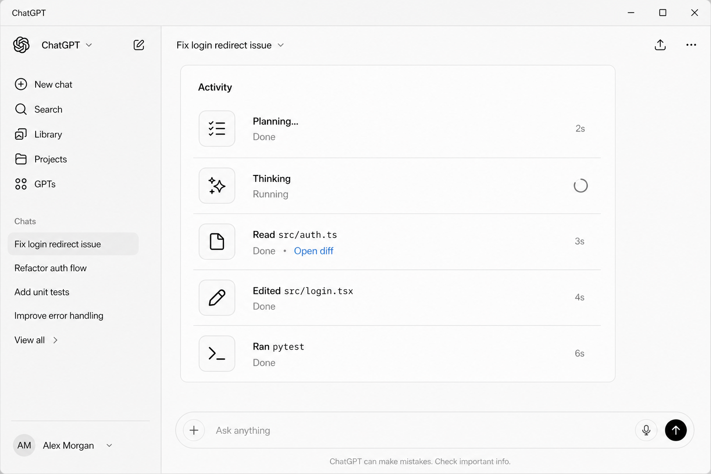

0 · 三层 IA（去重）

禁止把「Fnix / Code」与「Chat / Work」做成两套同级大开关。 产品菜单只有两项；Chat|Work 只在 Fnix 下出现。
侧栏 IA：顶栏左右 Work | Code；主按钮 New work；
Repositories（文件夹图标+名）；其下 Works / Chats 会话列表。
无 Search、无产品下拉、无右上角多余按钮。Composer 内 Ask/Plan/Craft。
Glass /?glass=1。

禁止把「Fnix / Code」与「Chat / Work」做成两套同级大开关。 产品菜单只有两项；Chat|Work 只在 Fnix 下出现。

主区只有品牌 + 标题 + Composer。Ask/Plan/Craft = 底栏 pill（对标 Cursor Agent / Codex Plan）。

侧栏 + 居中标题 + 底部 Composer；执行模式以后者模板为准。

产品 = Fnix Code；无 Chat|Work；胶囊 + Review Accept/Reject；Local|Worktree|Cloud。


Composer 上方 Goal row；消息区 Activity 时间线。